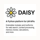
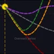
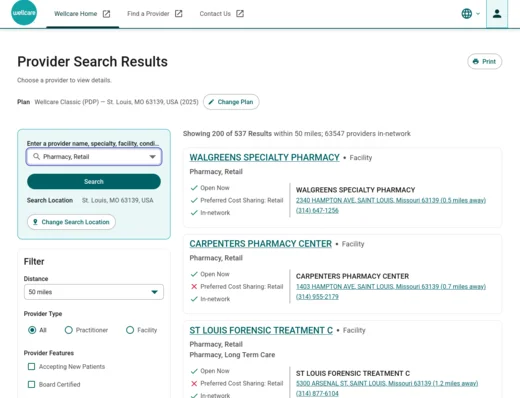
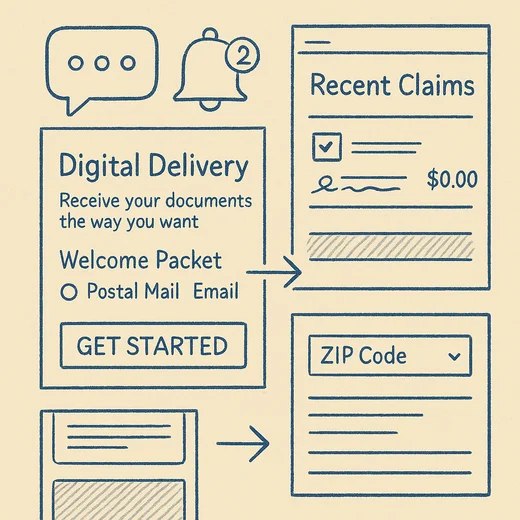

I build software that shouldn't run in a browser: a whole worm's nervous system, a wind chime that rings with the weather outside your window.
For almost two decades I've also done enterprise UX, most of it for tens of millions of Medicaid and Medicare members. I design the product and direct the AI harnesses that build it.
Independent builds, live and used and maintained. The first three are the ones I'd point a stranger at.
A real C. elegans, its whole locomotion connectome simulated neuron by neuron in WebAssembly, living in a bookmarklet. Click it on any page and the worm crawls out and eats the words. Sprinkle the page's own letters to feed it, and keep it fed or it dies. Drag the link to your bookmarks bar to take him anywhere, or 🪱 Birth Frederico right now!
Every note is synthesized live from the real inharmonic overtone ratios of a struck aluminum tube. No samples. A 240Hz physics rig moves the clapper, and local National Weather Service wind data feeds it, so the chimes ring with the weather outside your window.
A self-hosted memory and identity platform for persistent AI agents: dashboard, CLI, design system, and a Postgres/pgvector store underneath. I designed every part and directed the agents that wrote it.
Speed reading for eBooks, PDFs, and plain text, built on enhanced RSVP. Words arrive one at a time at your eye's fixation point, so there's no scanning, only reading. A throttle control keeps the pace where your attention is.

A 2023 exploration of how LLMs use tools, follow instructions, keep memories, and plan multi-step work. Agentic AI before the word was common.
Text to speech that runs entirely in your browser. Local and private, with no word limit; your words never leave the machine.
Learn birds by sight and by song. You don't win it; accuracy just climbs over time, across three regional bird sets.

A sobering choose-your-own-adventure story about democracy's past and its possible futures.
Everything else, source included.
Twenty years of enterprise UX stand behind the builds above. The two that carry the most weight, both at a Fortune 25 health insurer:
Ground-up redesign of a decade-old provider search used by tens of millions of Medicaid, Medicare, and Commercial members. Led research, content, and design across a three-phase delivery.

Concept work across member experience: dashboards, digital delivery, ID cards, progressive display patterns, recent claims, and secure messaging.

Physical products, designed and printed in St. Louis. Real customers and real reviews, on my own site plus eBay and Etsy. Proof the craft leaves the screen. One of them, an adjustable bracket for angled walls, is patent-pending hardware.
A system that lays durable, full-color images directly onto three-dimensional objects after they're made. I filed a provisional patent on it, aimed at licensing to the desktop laser and engraving makers. The mechanism stays under wraps until it's placed.
Film photography, 3D prints, long exposures, and video going back to 2005. The full gallery →